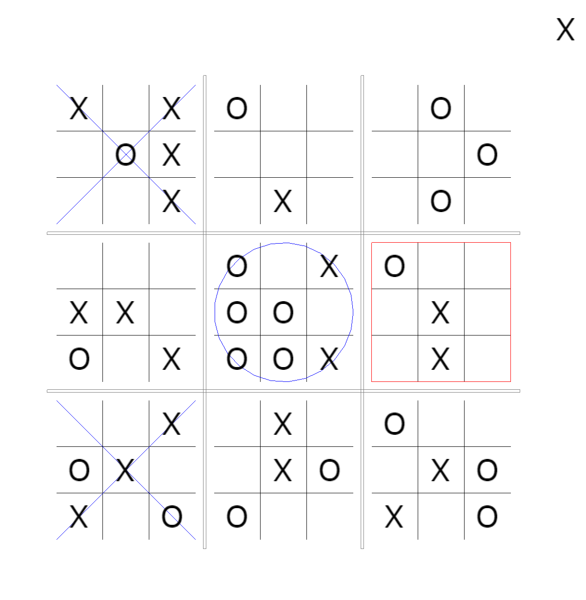
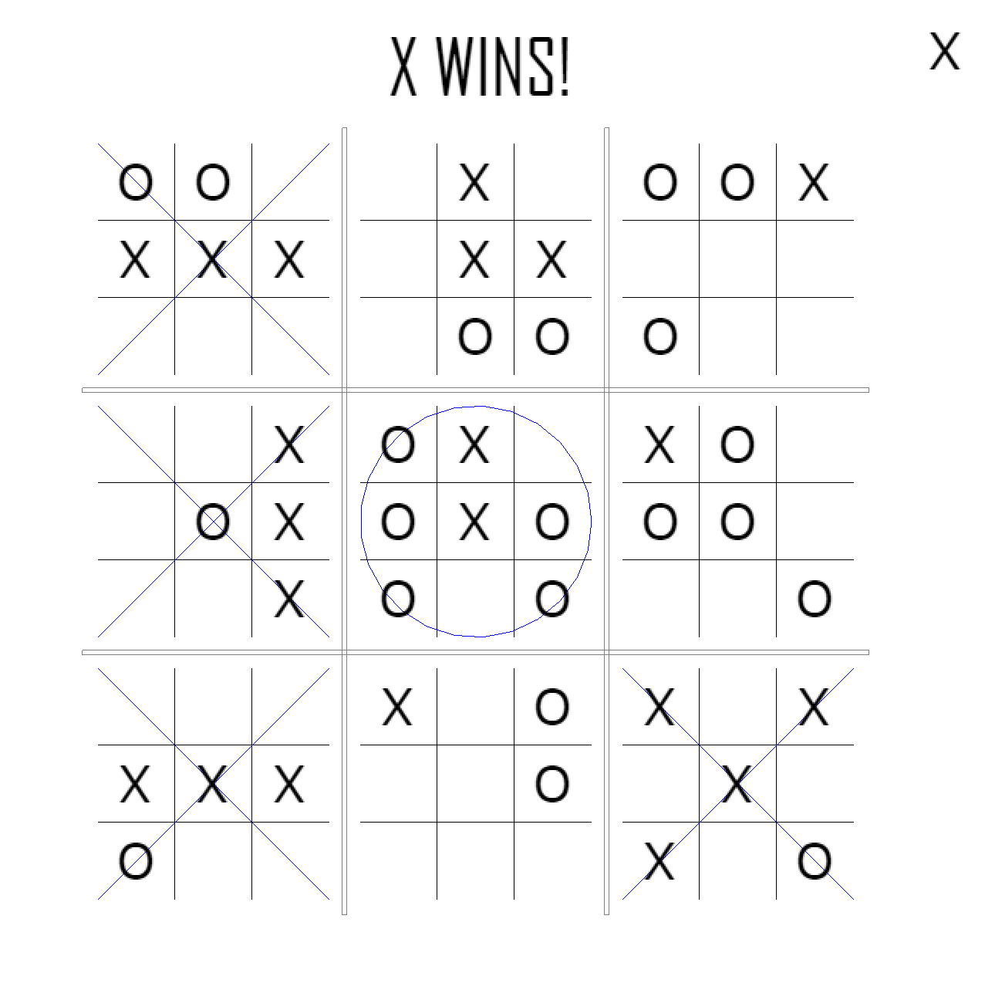

Sam Bunger


About Me
Experience
Projects
Resume
Hi, I'm Sam.
I'm 19.
I'm a computer science student at The George Washington University.
I have a passion for software engineering and web developement,
so I've built this site is to showcase the creations that I'm most proud of.

Experience
Schneider Electric Internship
During my time at Schneider I took on the challenge of building my first web app.
The goal of the internship was simple: Design a "landscape monitor" allowing Schneider's analysts to better monitor its top competitors.
The solution was mine to come up with, so I decided on a web app. But with zero previous web development expereience, I needed to research... extensively.
By the end of the Summer I had built my first web application called Sherlock
I built an internal facing Apache server running PHP and MySQL
The idea behind Sherlock:
All the competitive intelligence Sherlock would need could be found within Schneider.
Information on competitors that an employee finds in the news, from colleges, or online, can easily be posted on Sherlock.
Other users can then vote, comment, and share this information. This allows Schneider employees to gain an edge over competitors.


Personal Projects
Mega Tic-Tac-Toe --- Completed
This was a small project I built at Hackital.
The game consits of 9 simultaneous games of tic tac toe. The placement of Xs and Os will affect where your opponent can play next.
Built with Java, and LibGDX game framework.

